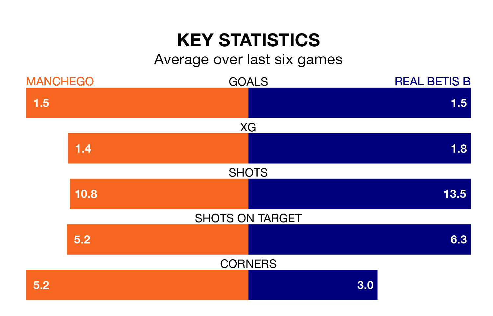

Relegation candidates Manchego face a challenge against high-flying Real Betis B at Polideportivo Juan Carlos I on Sunday.
Manchego are 15th in the Segunda División RFEF Group 4 table, and have picked up eight wins and 13 draws in their 32 games to date.
Betis B, meanwhile, are fourth in the standings with 51 points, having won 13 and drawn 12, and are 13 points behind table-toppers Sevilla B.
With 42 goals in 32 games so far this season, Betis B are the league's third-highest scorers with 1.3 goals per game. And they are conceding fewer than average, letting in 26 goals at a rate of 0.8 per game.
Manchego, meanwhile, are below average scorers, with 0.8 goals per game, compared to a league average of 1.0. They have conceded 1.1 goals per game.
The home side are in reasonable form in the Segunda División RFEF Group 4, with three wins and two draws from their last six games.
With three wins and a draw over that period, the visitors' form is slightly worse – they have taken 10 points from 18, compared to Manchego's 11.
Manchego's last match was on April 21, a 0-0 draw against La Unión Atlético.
Betis B drew 0-0 with Águilas last time out, also on April 21.
Updated: 07:59 (UTC), 26/04/24